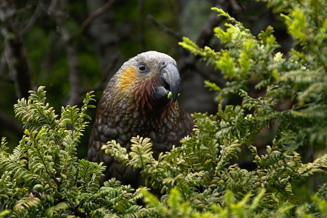
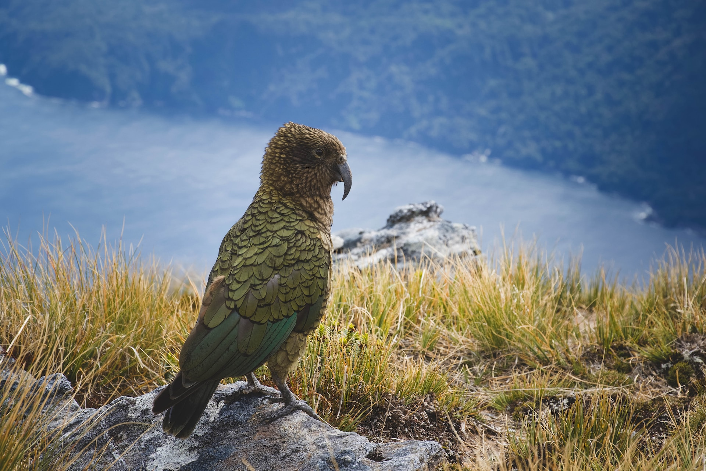

We are a charitable organisation with a strong community focus, which is dedicated to the conservation of kea, one of New Zealands most charismatic flagship species. We achieve these objectives through partnerships with people and communities to research and raise awareness of kea, their habitat and the unique issues impacting on kea and our fragile NZ mountain ecosystems.
The Kea Conservation Trust aims to assist in conservation of wild Kea in their natural habitat through:
The Kea Conservation Trust also aims to increase the husbandry standards and advocacy potential of those Kea held in captive facilities within New Zealand through:
To ensure an enriched and sustainable future for both wild and captive kea populations for the long-term benefit of all New Zealanders.
To develop and provide a coordinated support system through local and national affiliations for conservation of kea in the wild and their best practice management in captivity.
Kea are New Zealand’s alpine treasures. At the Kea Conservation Trust we work in collaboration with others, to preserve and protect these unique birds, both in their natural habitat and in captivity. To make this vision of a sustainable future for kea a reality however, we need your support!
2009 CMaG/ARAZPA Individual Award
2009 Auckland Zoo Conservation Award
2012 Department of Conservation - West Coast Award
